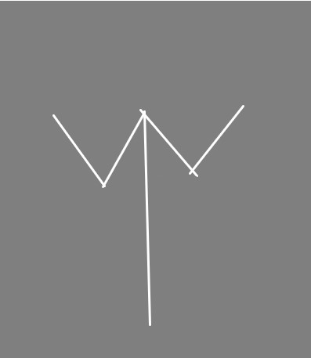

イアー

言葉の変遷から「ᛠ」は大きなニュアンスでは返ること、帰ることや還ることを意味するのではないかと考える。
墓は身体を土に返している。故郷は帰るところであり、海洋は海が生まれるものであったり
沈んで死んでいくときのものを象徴するため還るのではないかと考える。
還るというのは限定的な意味でいずれ結末を迎えた者でも再生するというニュアンスが含まれているのではないかと考える。
基本的にかえることがニュアンスなのでは無いかとしているが終わりも全体的なニュアンスであり墓や完成などが終わりの意味として小分類化されているのではないだろうか。
死は終わりではなくサイクルの一つに過ぎないのだということではないでしょうか。